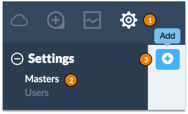

Add a new Salt Master to SaltStack Enterprise Web Console and update existing Salt Masters.
Masters are added, removed, and updated by clicking Settings > Masters.

| Detail | Description |
|---|---|
|
FQDN |
The hostname of the Salt Master that you want to add. Must be routable by the server running SaltStack Enterprise Web Console. |
|
API Port |
Salt API port (cherryPy). This is defined in your Salt Master configuration under rest_cherrypy. |
|
Authentication |
External authentication system configured on the Salt Master. This is defined in the Salt Master configuration under external_auth. |
|
User |
Local user on the Master that is used to run commands. |
| Error | Description |
|---|---|
| Unauthorized access | The Master was contacted on the provided hostname and port, but the provided credentials were not accepted. Make sure that the user you provided was added to the Salt Master configuration file in the external authentication section. |
| Master not reachable | The Master could not be contacted on the provided hostname and port. Double-check that you have installed cherrypy, that the port setting in the Salt Master configuration file is correct, and then verify that the salt-api service is running. |